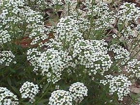

Ayuntamiento de Senés
JARDIN BOTANICO DE ESPECIES AUTOCTONAS DE SENES

Carrichtera annua

El canastillo (Carrichtera annua) es una planta herbácea anual característica de zonas áridas y semiáridas del ámbito mediterráneo. Se distingue por su crecimiento rastrero y su capacidad para desarrollarse en suelos pobres y pedregosos, formando parte del matorral bajo.
Presenta tallos ramificados y extendidos, con hojas pequeñas y profundamente divididas, adaptadas a reducir la pérdida de agua. Sus flores son pequeñas, de color blanquecino o amarillento, y tras la floración produce frutos secos con forma globosa que recuerdan a pequeños cestos, de donde deriva su nombre común.
El canastillo se distribuye por regiones áridas del Mediterráneo, especialmente en el sureste de la península ibérica. Crece en terrenos pedregosos, secos y expuestos, siendo frecuente en zonas de monte bajo y campos abandonados.
En entornos como los de la Sierra de los Filabres, forma parte del conjunto de especies adaptadas a condiciones de escasez hídrica.
El canastillo no destaca por usos medicinales relevantes, pero posee un importante valor ecológico al formar parte de la vegetación que protege el suelo frente a la erosión en zonas áridas.
Su presencia contribuye al equilibrio del ecosistema y a la conservación de la biodiversidad en ambientes secos.
El canastillo simboliza la adaptación extrema y la supervivencia en condiciones adversas. Representa la capacidad de las plantas para desarrollarse en ambientes áridos donde otras especies no prosperan.
Su forma característica también lo vincula con la tradición y la observación del entorno natural.
En Senés, el canastillo es una hierba que se da en todo el territorio, necesita poca agua. Su presencia indicaba terrenos pobres y condiciones de sequía
No se ha conocido que tenga propiedades curativas. Se utilizaba para ponerlas en macetas por su perfume agradable parecido a la miel.
El canastillo florece en primavera, aprovechando las lluvias estacionales. Tras este periodo, completa rápidamente su ciclo antes de la llegada del verano seco.
Su fruto seco con forma de pequeño cesto es una de sus características más llamativas y da origen a su nombre común. Además, es una planta perfectamente adaptada a ciclos de vida rápidos en ambientes extremos.
Su presencia es indicativa de ecosistemas bien adaptados a la aridez mediterránea.